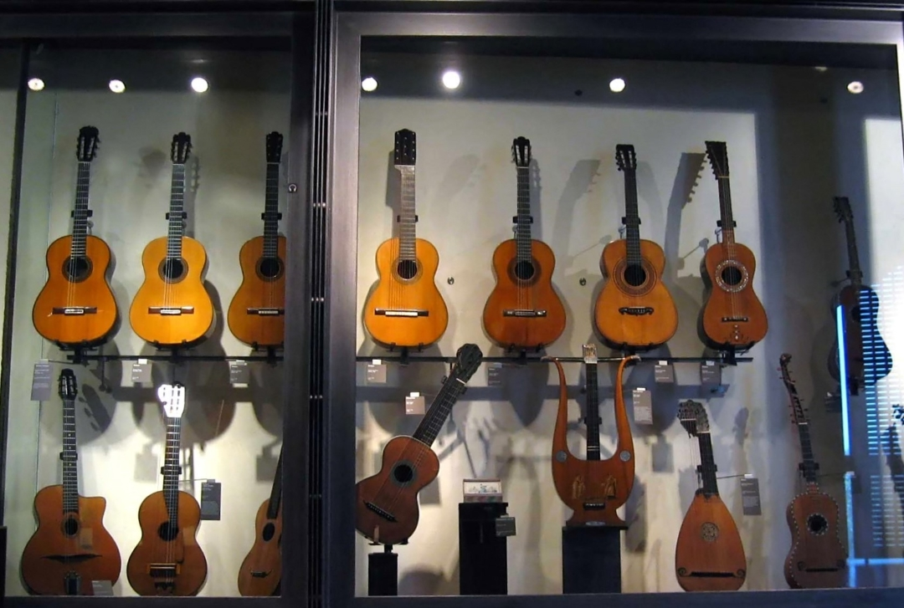
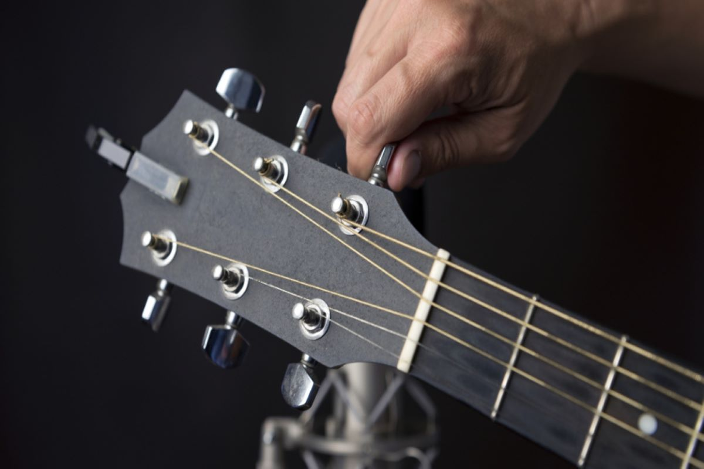
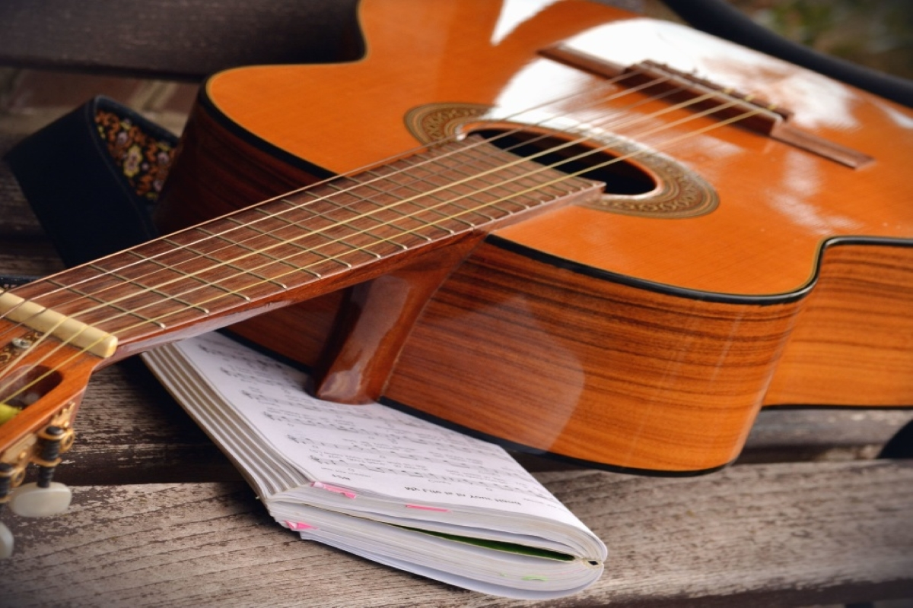

Chitara clasică (cunoscută şi sub numele de chitară cu corzi
de nylon sau chitară spaniolă) este un membru al familiei de chitare folosită în
muzica clasică. Un instrument cu coarde acustice din lemn, cu corzi din intestine sau nailon,
este un precursor al chitarelor moderne acustice şi electrice, ambele folosind corzi metalice.
Chitarele clasice sunt derivate din vihuela şi gitternul spaniol în secolele al XV-lea
şi al XVI-lea, care au evoluat mai târziu în chitara barocă din secolele al
XVII-lea şi al XVIII-lea şi mai târziu chitara clasică modernă la mijlocul
secolului al XIX-lea.

Pentru un jucător cu mâna dreaptă, chitara clasică tradiţională are douăsprezece
frete la distanţă de corp şi este ţinută în mod corespunzător pe piciorul stâng, astfel încât mâna
care smulge sau strânge corzile să facă acest lucru aproape de partea din spate a orificiului sonor
(aceasta se numeşte poziţia clasică). Chitara modernă cu coarde de oţel, pe de altă parte, are de obicei
paisprezece frete la distanţă de corp (vezi Dreadnought) şi este de obicei jucată în afara şoldului.
Termenul de chitară clasică modernă este uneori folosit pentru a distinge chitara clasică de forme mai
vechi de chitară, care sunt în sensul lor cel mai larg numite şi chitare clasice, sau mai specific, chitare
timpurii. Exemple de chitare timpurii includ chitara romantică timpurie cu şase corzi (c. 1790-1880) şi chitarele
baroce anterioare cu cinci cursuri.

Materialele şi metodele de construcţie a chitarelor clasice pot varia, dar forma tipică este fie chitara
clasică modernă, fie chitara clasică istorică asemănătoare chitarelor romantice timpurii din Franţa şi Italia.

Se poate identifica un arbore genealogic al chitarelor. Chitara flamenco derivă din clasicul modern, dar are diferenţe de material, construcţie şi sunet.
Chitara clasică modernă de astăzi a fost stabilită de designul târziu al lutierului spaniol din secolul al XIX-lea, Antonio Torres Jurado.